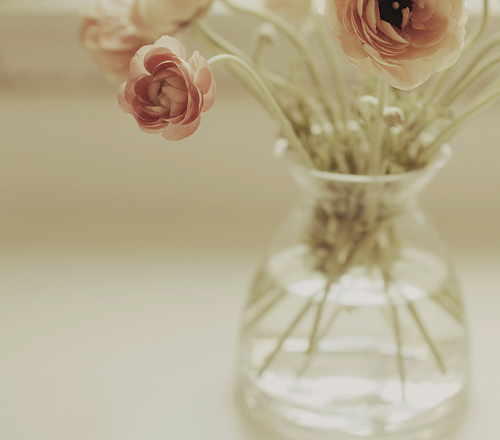

回忆就像是赴一场与你的约会。我不知道能不能写完它，也不知道在哪里完结比较好。没想好要怎么称呼你，那么就用你来叙述吧。你在我人生中以秘密名字记下来，虽然某一度轰轰烈烈占据了我大半心脏。是的，我还留下那么一下部分，里面装着我对未来的担忧，想着怎么和朋友玩乐，奶茶选抹茶好还是红茶好。我在爱着别人的同时，也是不忘记要给自己留下一点。为此被人挑出来攻击的时候，我理直气壮把它解释为习惯，猥琐地希望能得到对方的谅解。后来我发现在成年以后我们翻看过去的希望很渺茫，被别人翻开的机会就更加渺小。所以我没用太多的时间去想你。可是，你现在仍然是我惟一一个想用“我们”去表明你和我的人。
――擦光所有火柴难令气氛如从前闪耀，至少感激当日陪着我开的甜蜜玩笑。我经常活得如此快乐，在快乐的时候，也会想象你是否精彩的活。